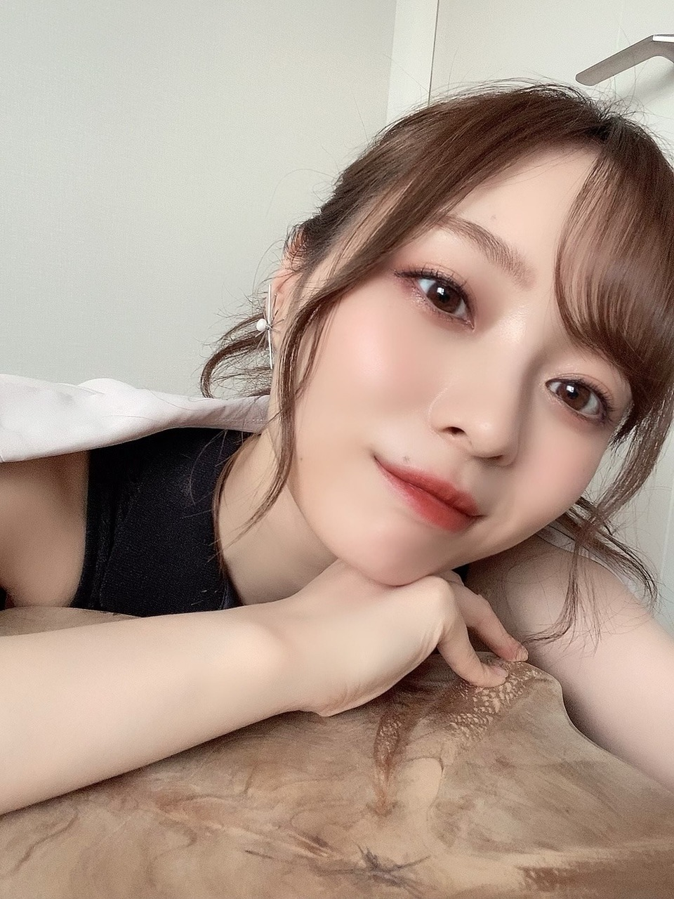
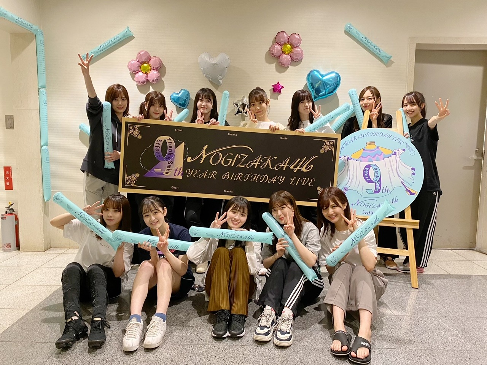
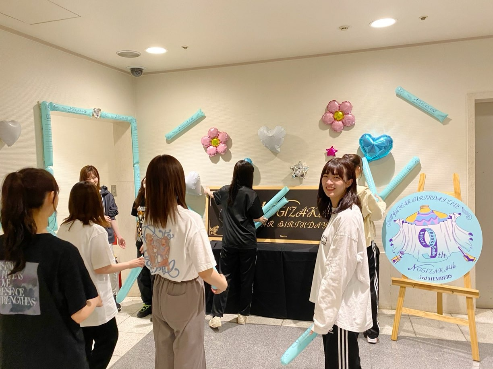
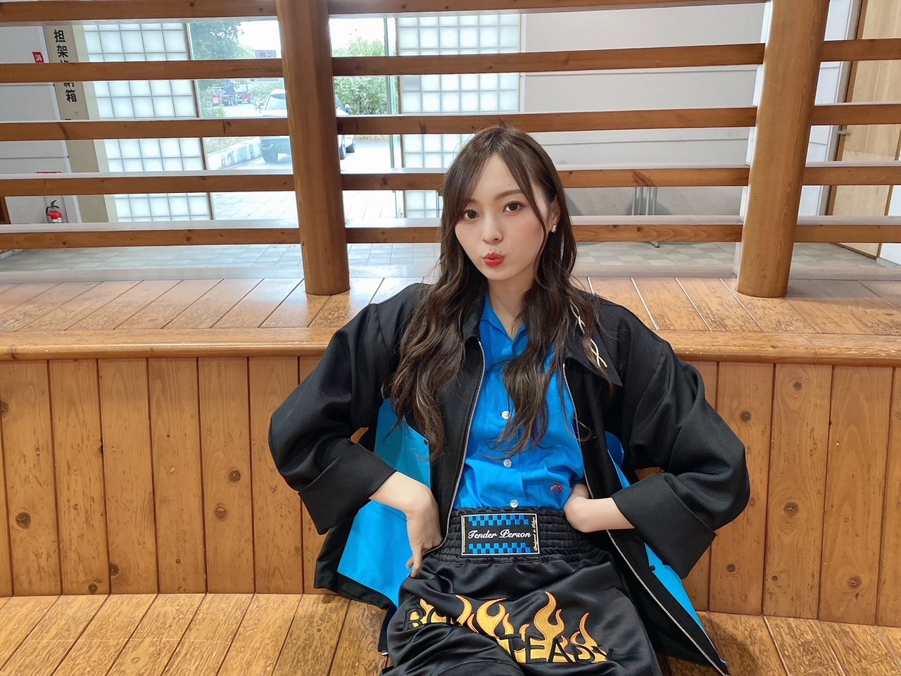
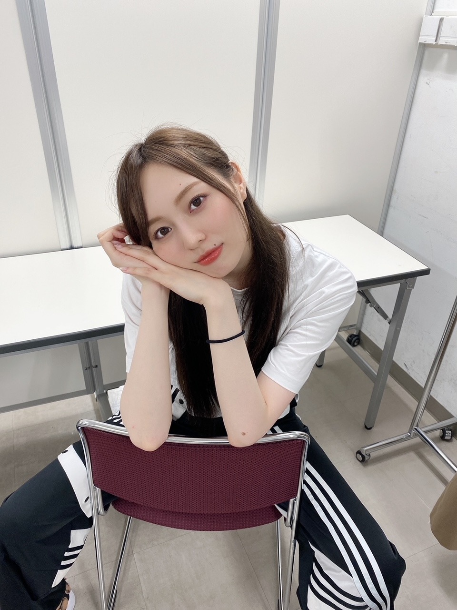

なんとなく掴んだり

すっかり暑くなりました。
日も伸びましたね~
この季節になると頻繁に
あー髪の毛切りたい！という衝動に駆られますが
どうにか落ち着かせようと思います...
いつか、いつかね...
さて、もう１ヶ月経とうとしています。
愛に溢れすぎていましたね~
先日 無事終えることが出来ました！

わーい！
４年ぶり！みんなが４つ、歳を重ねました。
いやあ、みんな泣きすぎなのよ！愛おしい！
終わってだいぶ経ちましたが
今でも 映像を何度も見返してしまいます~
この日は全員が 楽しむことを大事にしていたなあと、振り返って思います。
それぞれが担う役割への重圧やプレッシャーから
本番前は緊張も不安も凄まじいのですが...
いつもと気持ちの持ち方が違って
楽しむことを第一線に考えられた気がします。
当たり前のようだけど、一番大切なこと！
きっとこの日を迎えられたことが
どれほど 奇跡的で、特別で、貴重で 、
念願だった一日なのか
みんながみんな同じテンションで理解していたからだと思います☀︎
１２人で ４年半経った今
変わらず同じステージにいられる奇跡。
当たり前に、３期生は１２人！
そう思って過ごしてきたけれど
当たり前なんかじゃありません。
今まで みんなの側で過ごして来たからこそ
これは奇跡なんだと。
色んな瞬間を共にしてきたからこそ、
色んな姿を目にしてきたからこそ、
これは当たり前ではないんだなと
そんな奇跡を改めて感じた一日でした。
こんなにも頑張っている１１人なのに
自分自身が頑張っているってことに全然気づかず
それ以上に走り続けることが出来ちゃう素敵な１１人です。
そんな皆だから、
その姿を見て 私も気持ちが折れることなく
今まで続けてこれた事がたくさんあるし
そんな皆が困ってるとき どうにか助けたいと、
守りたいと強く思うようになりました。
そばにいてあげられたときもあれば
そうでない時もあったね。
私に出来ることはちっぽけですが
ただただ、皆を想い続け
寄り添っていたいです。
生涯 大事に大事にしたい人達！◎
出逢えて本当に良かった！幸せ！
これからも皆でいっぱい
思い出作ろうね！
思い出ファーストだね！

ふいの３期生がすきなんですよね~
そして急遽配信になったにも関わらず
最高のサポートをして下さり、
素敵な演出と準備を進めてくださった
スタッフの皆様には
心から感謝しています。
９thバスラ、
ラストを努めさせていただけたこと
本当に有難かったです。
行き場のない悔しさが募っていきますが...
配信を観て応援してくださった皆様！
本当にありがとうございました！
届いていたらいいな！
皆様、元気でお会いしましょう。
２７枚目シングル
「ごめんね Fingers crossed」
発売までもう間もなくとなりました。
車メインのMVは 見応え抜群。
可愛い子と、かっこいいスポーツカー。
撮影時からかなり興奮しました！
活動させて頂くことになりました。
日頃から愛のある応援、
本当にありがとうございます。
ここにいられる感謝を忘れず、
行動、言動に責任を持って、そして
自分に満足せず、自分に厳しく、
貢献できるよう努めてまいります。
素敵な作品を創っていきます！
どうぞ、よろしくお願いします。

スターター のりのりでした！
衣装も抜群にカッコよくて タイプでした~
あー免許欲しいなあ。車運転したい！
お知らせ◎
▽２７枚目シングル収録 個人PV「梅色」
https://youtu.be/rknOTjTQjEc
予告編がYouTubeにて公開になりました！
久しぶりの個人PV。歌っております。
分かる人には分かる、
私の色んなものが詰まっています。
空扉衣装、青いバラ、ランウェイ...
とても愛を感じました。
そして素敵すぎる楽曲を頂きました...
聴いた瞬間虜でした。耳から離れない！
歌詞にも小ネタが詰まっておりますので
フルサイズも楽しみに待っていてください！
▽
乃木坂毎月劇場第二弾
カップスターコメディ
「しゃべる奴らはハラが減る」
https://youtu.be/kWphrenL1To
YouTubeにて公開されました！
私は第二弾からの参戦になりますが
東京03の御三方もとても優しく...
楽しく撮影させていただいております！
チェックしてみてください♪
▽「乃木坂あそぶだけ」
のぎ動画にて配信されております！
【みんなでポンコツペイント】、そして
【ボブジテン】というゲームを
ただただ楽しく遊んでいる動画です︎︎︎︎✌︎
れんかちゃん、たまみ、かえで の４人で
わいわいしておりますのでこちらも是非☀︎
〜テレビ
６／６ テレビ東京 ２４：００〜
６／７ ＴＢＳ ２１：３０〜
▽「THE 突破ファイル」
６／１０ 日本テレビ １９：００〜
▽「ミュージックステーション」
６／１１ テレビ朝日 ２１：００〜
▽「MUSIC FAIR」
６／１２ フジテレビ １８：００〜
▽「シブヤノオト」
６／１２ NHK総合 ２３：１０〜
▽「ナニコレ珍百景」
６／１３ テレビ朝日 １９：００〜
〜ラジオ
▽
｢
TOKYO FM 乃木坂FES ～乃木坂46がワンモからSOLまで1日電波ジャック～｣
６／８ TOKYO FM ６：００~２３：５５
▽「レコメン！」
６／１５ 文化放送 ２２：００〜
〜雑誌
▽「with ７月号」
▽「日経エンタテインメント！ ７月号」
発売中です！
長々と失礼しました！
来週は歌番組への出演が立て続けにあります！
嬉しい。感謝ですね。
毎回パフォーマンスの完成度を更新できるよう
努めてまいります︎︎︎︎✌︎
来週末にはオンラインの
ミート&グリートがありますね~
かなり久々な気が...
申し込んでくださった皆様、
本当にありがとうございます☀︎
話したいこと、沢山ありますね！
なんでもおっけーですので
一緒に楽しみましょうね~♪！
外の暑さに 室内との寒暖差...
季節の変わり目は
体調崩しやすかったりもしますので
皆様ご自愛くださいね。
無理せず、たまには自分を
たっぷり甘やかしながら
お仕事や学校、バイト、ファイトです！

ではでは
また更新します
どうにか 目の前の瞬間を
頭の中の記憶だけではない
確かなモノとして残したくて
写真を撮るように心がけていますが
全然足りないですね...
やはりその瞬間を収めるのは難しい...
だからしっかり、心に刻みたい...
しっかりモグモグばくばく食べて、
心も身体も健康に！
Original：https://www.nogizaka46.com/s/n46/diary/detail/61794?ima=4935&cd=MEMBER